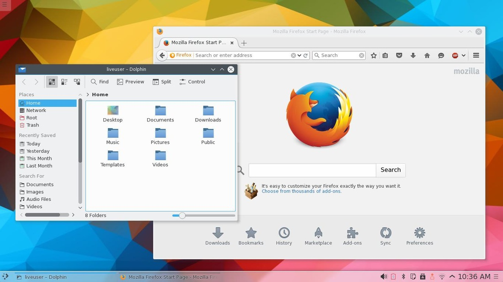
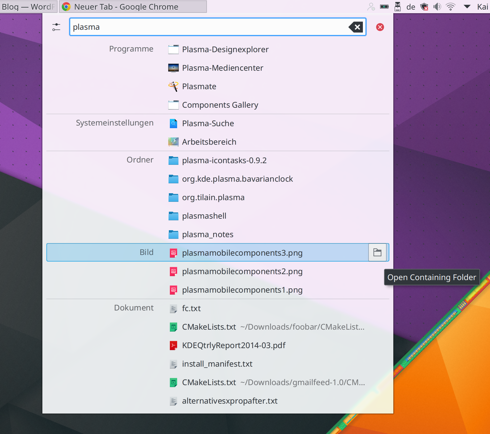
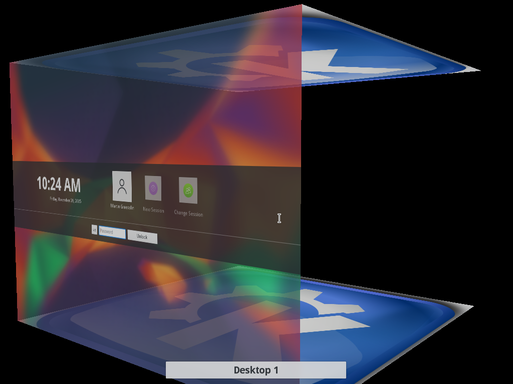
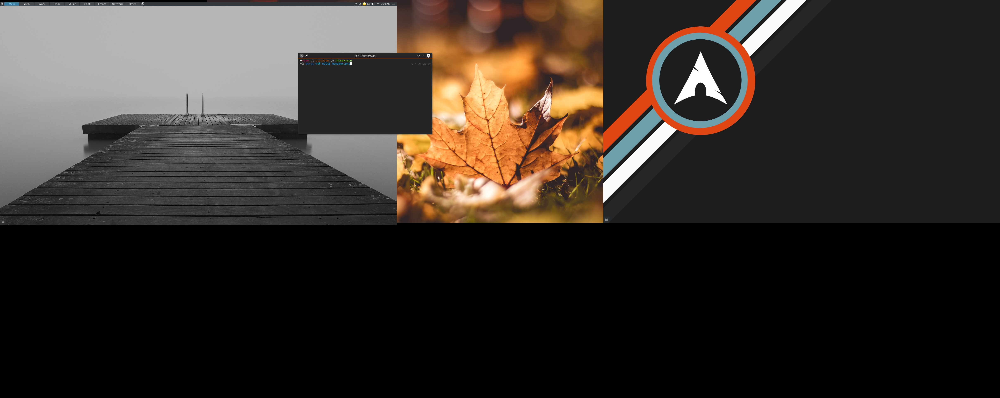

After watching the continued development of the Plasma 5 desktop environment from a distance, I determined I needed to give it another try. It was just before version 5.6 was released, and the project appeared to be finding it’s stride. Right up front, I want to come clean and admit that I have never really liked the KDE/Plasma desktop environment (more on that below). However, with that said… I am still using the plasma desktop on my main computer (months later, and haven’t aborted yet**…). Here are my thoughts.
My History with KDE/Plasma
Now, as I said above, I have never really liked KDE (now Plasma). In fact, sometimes I down right hated it. It is a great project, and I wanted to like it. It has so many features and is amazing for power users. I have tried it again and again, desperately wanting to be swept off my feet, but it’s design always kept me bolted to the ground. The theming made me feel like I was using a Fisher-Price operating system (which is ironic, because like I said… the plasma desktop is probably one of the best power user environments out there). The bulky features always made it feel childish. So, with that said… I have been using using the Plasma desktop on all of my personal computers for several months. Here are my thoughts.
Pros
- The theming has come a long way. It no longer looks like a child’s toy. Even the default theme is very appealing. Also, it has dark themes, which I am always a fan of.

- I Love the customization. I love the level of customization the plasma desktop allows. I can set transparency, add/remove panels or widgets, set custom keybindings (very important to me), and a bunch of other operations very easily.

Lets me hide window bars One customization I love is the ability to hide the window bars. I am not a fan of window bars, because I think they look clunky and just take up space. One feature I like about many tiling window managers is it is usually very easy to hide the window bars. However, that isn’t always the case in Desktop Environments, but I was pleased with how easy it was to do it in Plasma.
It Lets me create an awesome-wm environment, but as a full DE Similar to above, I am able to implement some of the features I love about tiling window managers like awesome and i3, but with the full desktop environment. In addition to removing window bars, I like to easily move and resize windows by hitting the meta or alt key and left/right clicking the windows. Again, in Plasma this was simple.
I love krunner. A lot. I like using application launchers, and krunner looks nice, is lightning fast, and gets the job done. I didn’t really know much about krunner during previous attempts at using KDE. This was definitely contributor to why I liked it much more this time around.

- The ability to use old-school animations is fun There is not much to say
here. While not very practical, sometimes spinning a desktop cube is
just straight up fun.

- Fast. Even for a full DE
Cons
- Multi-monitor support. WTF. This was by far the biggest issue I
had. My main computer is a 17” laptop that I connect to two 24”
displays. However, because it is a indeed a laptop, I sometimes move
it around and be semi-mobile with it. This requires disconnecting the
monitors and going from 1 screen to 3 or vice-versa. Well it turns
out that this is usually a pain in the ass for me in Plasma. First,
I have to configure the monitors one-by-one, hitting “apply” between
each configuration (it doesn’t like when I try to move and place all
3 displays in one swoop). Second, once I setup the screen placement,
the panels often go crazy and can’t be found, or I have to play
with them to set them up correctly. Lastly, sometimes the displays
overlap each other oddly, even though they appear normal in the
display settings. The wallpapers almost never set correctly and my
right-click menu is disabled on some screens but not
others. Basically, it’s just a hot mess and the most infuriating
problem I faced when using Plasma. If I used a laptop without
monitors, or even a permanent desktop setup, I would be
fine. However, that is not my use case.

- Randomly just stops working Sometimes, KDE applications just crash and I can’t seem to get them back. Widgets seemed to beak things more frequently, so I just stopped using them. (Again, not a good solution)
- A full DE While I said above that it was nice having an
environment that resembled a window manager, but had the benefit of
the full suite of applications that come with a desktop environment,
sometimes it was also a pain. There’s just a lot of crap that I
don’t use. The obvious reminder of this was when I would run
pacman -Syu, and see that the massive KDE stack would need updates. - Sometimes all the settings can be very confusing Having all these options is great, but sometimes it was overwhelming. Additionally, the settings felt disjointed and I didn’t know where the settings for some things where.
Final Thoughts
- I can finally use Plasma
- Very fast and lightweight for all that it is
- Still has a bit of stability/polish work to go
** Update: I took forever to get this post out and I have actually moved off of Plasma. I just couldn’t handle the multi-monitor issues I had. However, I will definitely be trying out the Desktop Environment again in the future (I moved to i3-gaps for now. I love my tiling window managers :) )